Do Financial Variables Help Predict Macroeconomic Environment? The Case of the Czech Republic
Tomas Havranek, Roman Horvath, Jakub Mateju (2012), "Monetary transmission and the financial sector in the Czech Republic." Economic Change and Restructuring 45(3): 135-155. doi.org/10.1007/s10644-011-9106-z The text here is the working paper. It is Czech National Bank Working Paper 6/2010, the openly available version, published two years later under a different title; the version of record is behind the publisher's paywall. The working paper carries a nontechnical summary, which the journal article does not. Its cross-references to the impulse-response figures are one behind the figures themselves -- the text that says "Figure 1" points at Figure 2, and so on -- and are reproduced as printed. The appendix charts, which the working paper prints unnumbered, are numbered A1 to A6 here so the page can refer to them.
Tomáš Havránek, Roman Horváth and Jakub Matějů
* Tomáš Havránek: Czech National Bank and Institute of Economic Studies, Charles University, Prague. Contact: tomas.havranek@cnb.cz
Roman Horváth: Czech National Bank and Institute of Economic Studies, Charles University, Prague. Contact: roman.horvath@gmail.com.
Jakub Matějů: CERGE-EI, Prague and Czech National Bank. Contact: jakub.mateju@cnb.cz
This research was supported by Czech National Bank Research Project B3/10. We thank Jan Brůha, Zuzana Fungáčová, Jan Hanousek, and seminar participants at the Czech National Bank and the 11th International Conference “Financial and Monetary Stability in Emerging Countries” (Bucharest, Romania). The views expressed in this paper are not necessarily those of the Czech National Bank.
Abstract
In this paper, we 1) examine the interactions of financial variables and the macroeconomy within the block-restriction vector autoregression model and 2) evaluate to what extent the financial variables improve the forecasts of GDP growth and inflation. For this reason, various financial variables are examined, including those unexplored in previous literature, such as the share of liquid assets in the banking industry and the loan loss provision rate. Our results suggest that financial variables have a systematic and statistically significant effect on macroeconomic fluctuations. In terms of forecast evaluation, financial variables in general seem to improve the forecast of macroeconomic variables, but the predictive performance of individual financial variables varies over time, in particular during the 2008–2009 crisis.
Keywords: Forecasting, macroeconomic and financial linkages, vector autoregressions. JEL Codes: E44, E58, E47, G17.
Nontechnical Summary
The recent financial crisis has intensified the interest in exploring the interactions between monetary policy and financial stability and raised new challenges for central bank policies, in particular how to operationalize the issues related to financial stability for monetary policy decision-making.
This paper wants to take a step in this direction using the data from the Czech Republic. We examine how various financial variables – more specifically, credit, bank liquidity, loan loss provisions, the share of non-performing loans, and the PX stock market index – interact with prices and GDP in a dynamic empirical model (the so-called block-restriction vector autoregression model) consisting of Czech and euro area series. Next, we evaluate to what extent the inclusion of financial variables delivers more precise forecasts of the macroeconomy.
The results show that there are sizeable interactions between the macroeconomy and financial sector developments, with a more stable financial sector contributing to higher economic growth. The results also indicate a well-functioning monetary transmission mechanism in the Czech Republic, with monetary shocks having their peak effect on the macroeconomy after a year or so. In addition, a monetary tightening causes a credit contraction, a fall in bank liquidity, and an increase in provisions for loan losses. Except for credit, the effect of monetary policy on financial variables is much faster as compared to inflation and GDP and reaches its peak/bottom in much less than one year. More generally, the results suggest that a monetary contraction induces more prudent bank behavior.
Next, we compare the forecasting performance of two empirical models. The first one consists of Czech and euro area macroeconomic variables only, while the second one additionally includes Czech financial variables. We find that the forecasting performance of the second model often dominates that of the first. In other words, financial variables improve the forecasts of macroeconomic variables. Nevertheless, it has to be emphasized that the performance of the individual financial variables varies over time, and good performance in one period does not necessarily guarantee good performance in the following period.
1. Introduction
The recent financial crisis has increased the interest in exploring the interactions between the macroeconomic environment and financial sector developments and created several challenges for central bank policies, in particular how to operationalize the issues related to financial stability for monetary policy decision-making and how to build models that are able to give some guidance in situations of financial instability (Goodhart et al., 2009).
This paper seeks to quantify the interactions between various financial variables and the macroeconomy in the Czech Republic and particularly to evaluate the predictive content of financial variables. While some previous research examined the predictive power of asset prices for inflation and real activity, it typically focused on a particular set of financial variables such as term spread (Estrella et al., 2003), various short-term interest rates (Forni et al., 2003), housing prices (Goodhart and Hoffman, 2000), or the default rate (Jacobson et al., 2005). This paper aims to examine the predictive power of a different set of financial variables, especially those related to credit or liquidity risk such as bank liquidity, loan loss provisions, or the share of non-performing loans (together with some more widely applied variables such as equity prices). According to the authoritative survey of Stock and Watson (2003) on the predictive ability of asset prices for inflation and GDP growth, none of the nearly 100 surveyed articles has examined the predictive content of the variables that we focus on in this paper. In addition, we investigate the predictive content of financial variables during the recent 2008–2009 economic and financial crisis in order to assess which financial variables, if any, matter particularly in turbulent periods.
We believe that one of the preconditions for building general equilibrium macroeconomic models with a financial sector that would be of some guidance for monetary policy decision-making is first to verify empirically whether financial variables convey any useful additional information. To shed light on this issue, we compare the forecasting performance of two empirical models. The first forecasting model will consist of macroeconomic variables only (hereinafter referred to for convenience as the macroeconomic model), while the second model will in addition include financial variables (hereinafter referred to for convenience as the macro-finance model). The empirical framework we apply is a two-country vector autoregression (VAR) model with block restriction, as in Zha (1999), consisting of two economies – the Czech Republic and the euro area. The block restriction is introduced in such a way that the euro area variables can influence the Czech variables, but not vice versa. In addition to examining whether the financial sector helps predict the macroeconomic environment, our framework allows us to assess the transmission and relative importance of euro area developments for the Czech economy.
Our results suggest that financial variables have a systematic and statistically significant effect on the domestic economy. In terms of forecast evaluation, financial variables in general seem to improve the forecast of macroeconomic variables, but the predictive performance of the individual financial variables varies over time, and good performance in one period does not necessarily guarantee good performance in the following period. In other words, the results broadly confirm the findings of Stock and Watson (2003) in the sense that some financial variables predict well either inflation or output growth in some periods, but do not predict them in different periods, while in these different periods some other financial variables are important. An exception to this empirical regularity is the stock market index, which seems to consistently improve the forecast of both GDP and prices.
In addition, our results document a well-functioning monetary transmission mechanism as well as considerable interactions between the macroeconomy and financial sector developments. Among other things, our results indicate that an increase in credit boosts GDP as well as prices. A monetary tightening contributes to credit contraction, a fall in bank liquidity, and an increase in provisions for loan losses.
The paper is organized as follows. Section 2 briefly discusses the related literature. Section 3 describes the data and empirical methodology. The results are given in Section 4. Concluding remarks are provided in Section 5. An Appendix with additional results follows.
2. Related Literature
There are several recent contributions that investigate the links between the macroeconomy and the financial sector within various vector autoregression (VAR) models. Jacobson et al. (2005) estimate the aggregate default rate for Sweden and include it along with other Swedish macroeconomic variables. Their results suggest that the default rate influences inflation as well as GDP growth and that there can be a conflict between monetary policy and financial stability, as stricter monetary policy causes lower inflation but increases the default rate.
Using data from developed countries, Assenmacher and Gerlach (2008a,b) investigate whether monetary policy should stabilize asset prices within a panel VAR framework. Their results indicate that asset price stabilization via monetary policy would be accompanied by sizable effects on economic activity, and bursting asset price bubbles would result in a large drop in economic activity.
Goodhart and Hofmann (2008) study a VAR model consisting of standard macroeconomic variables, housing prices, credit, and money in a set of industrialized countries. They document a significant multidirectional link between all these variables and that the effects of money and credit are especially important when there is a boom in the housing market.
Elbourne and Haan (2006) examine the interactions between the financial structure and monetary transmission in Central and Eastern European countries up to 2004. They fail to find any significant link. In this paper, however, we want to focus on the interactions between financial stability and the macroeconomic environment rather than on the financial structure.
Stock and Watson (2003) analyze whether asset prices improve the forecasting performance of inflation and GDP growth using a large panel dataset of seven OECD countries covering the 1959–1999 period. Their conclusions are somewhat mixed. Asset prices help improve forecast performance in some countries and in some periods. Stock and Watson (2003) show that it is difficult to draw general lessons concerning forecasting performance, since good performance of a financial indicator in one period is largely unrelated to its predictive power in the future.
As regards the previous research for the Czech Republic, Baboucek and Jancar (2005) examine within a VAR model how the quality of the bank loan portfolio interacts with the macroeconomic environment. As compared to Baboucek and Jancar (2005), we analyze a richer set of financial variables, explicitly investigate the effect of the euro area economy on the Czech economy, and provide pseudo-out-of-sample forecasting for two competing models, the first including macroeconomic variables only and the second including macroeconomic as well as financial variables. Other related research has examined the effects of monetary policy on the real economy within a VAR model (Holub, 2008; Borys et al., 2009) or focused on stress testing the Czech banking system (Čihák et al., 2007).
3. Estimation Methodology and Data
The VAR system is employed to model the interactions between the macroeconomy and the financial sector in the Czech Republic, controlling for euro area developments. We begin with a general specification, assuming that the economy is described by a structural form equation which is of linear, stochastic dynamic form (omitting constant and other deterministic terms):
where A(L) is an m x m matrix polynomial in the lag operator (with non-negative powers), y(t) is an m x 1 vector of observations, and ε(t) is an m x 1 vector of structural disturbances or shocks. ε(t) is serially uncorrelated and var(ε(t)) = Λ, and Λ is a diagonal matrix where the diagonal elements are the variances of the structural disturbances.
We divide the model into a euro area block and a Czech block. Therefore, we have
The model contains m1 domestic variables in a small open (Czech) economy vector y1(t) and m2 variables exogenous to the small open economy in vector y2(t), i.e., the euro area variables. The dimension of Aij(L) is mi x mj, yi(t) and εi(t) each of dimension mi x 1.
The vector of Czech variables consists of a measure of economic activity (), a measure of the aggregate price level (), the short-term interest rate (), the exchange rate (), and a financial variable (). Obviously, it is not easy to determine which variables capture the Czech financial sector most accurately (see also Jacobson et al., 2005, for a related discussion of this issue for Sweden). As the Czech financial sector is primarily bank-based and has been characterized by high credit growth (CNB, 2009), our list of variables for proxying the financial stance is as follows: total credit, bank liquidity (the share of liquid assets), the share of non-performing loans, loan loss provisions, and the Prague stock market index:
The vector of foreign variables comprises a measure of euro area economic activity (), the euro area aggregate price level (), and the euro area short term interest rate ():
As the Czech Republic is a small economy, its shocks are unlikely to have a significant effect on the euro area economy and, therefore, we accordingly restrict A21(L) to 0. This is the so-called block exogeneity restriction and it has been employed by studies of small (open) economies before (e.g., Cushman and Zha, 1997; Maćkowiak, 2006). As claimed by Zha (1999), failing to impose the block exogeneity restriction may result in misleading conclusions.
The shocks are identified by the Cholesky decomposition. Following Mojon and Peersman (2001) and Goodhart and Hofmann (2008), we order the variables in each block as follows: a measure of economic activity, the price level, the interest rate, the exchange rate, and the financial stance (the last two variables for the Czech block only).
Next, after estimating and identifying the shocks in the aforementioned VAR model, we provide the impulse responses with bootstrapped confidence intervals. The core of our exercise is to perform out-of-sample forecasts. To do so, we estimate the VAR models using data up to 8/2006, 8/2007, and 8/2008, and produce the corresponding out-of-sample forecasts for the following 12 months. We evaluate the forecasting performance for each of these three periods separately as well as jointly by averaging the individual forecast performance over these years for particular forecast horizons.
The choice to employ a relatively simple block-restriction VAR model is motivated by the fact that the previous experience with more advanced VAR-type models, such as factor-augmented VAR, did not yield promising results when applied to the Czech data and the sign-restriction and simple VAR models delivered largely similar results (Borys et al., 2009). For example, Borys et al. (2009) apply various VAR models including factor-augmented VAR, and while some VAR, structural VAR, and Bayesian VAR models give sensible impulse response, the impulse responses from the factor-augmented VAR model exhibit large confidence intervals and often a sign of response that is at odds with economic theory.
Data
We use monthly data from 1999:1 (the creation of the euro area) onwards (the last observation is 2009:9). Both the Czech and euro area GDP and price series are in log levels, as is the Czech credit to the private sector series. Since the GDP data are available at quarterly frequency, they are interpolated using the quadratic match method. These interpolated data are used for the VAR models in the inflation forecasting exercise only. When we forecast GDP, VAR models with quarterly frequency series are employed. The log of the net price level (administrative prices are excluded from this price index) is used as the measure of prices. The Czech and euro area 3M money market rates are used as interest rates. The log of the nominal CZK/EUR rate is used as the exchange rate. The source of the Czech macroeconomic data is the Czech National Bank’s publicly available ARAD database, and the source of the euro area data is Eurostat.
As regards the financial variables, we use total credit to Czech residents and non-residents, which is available in the ARAD database. The data on the ratio of non-performing loans to total loans to clients, the ratio of loan loss provisions to total assets, and bank liquidity (defined as the ratio of liquid to total assets of Czech banks) were obtained from the internal supervisory databases of the Czech National Bank (CNB). In addition, the PX index, available at the Prague Stock Exchange’s website, is used. All financial data are available on a monthly frequency.
In most cases, we use the series in log-levels to achieve stability of the VAR system. As Lütkepohl (2006) suggests, stationarity or strong cointegration of the series in a VAR model is not necessary as long as the system is stable as a whole. Moreover, Stock and Watson (1998) suggest exploiting the additional information contained in levels rather than in differences.
Financial Series Description
The financial series was selected based on data availability and on the fact that the Czech financial system is largely bank-based, with the stock market playing only a minor role. This is reflected by the choice of variables: credit, liquidity, loan loss provisions, and non-performing loans relate to the banking sector, while the PX index reflects the information available on the stock market.
![Six line charts of the monthly financial series, 1998 or 1999 to 2009. Total credit in logs drifts down to about 13.7 by 2002 and then climbs steadily to about 14.6. The ratio of liquid assets to total assets jumps from about 15% to nearly 40% in 2002, holds there until 2006, and falls back to the mid-20s. Loan loss provisions fall from about 5% of total assets to about 1%, and non-performing loans from about 22% of loans to about 3%, both bottoming out in the middle of the decade and turning up at the end. The log PX index rises from 6 to about 7.5 by 2007 and drops sharply in 2008. The financial stance principal component rises from about -3 to about 2 and then eases.](figures/fig1.png)
Figure 1 shows the evolution of the financial variables over time. The volume of total credit was slowly but steadily declining during the late 1990s and early 2000s, reflecting the prudent behavior of Czech banks in the late 1990s associated with the restructuring of the Czech banking industry (Bárta and Singer, 2006). In the same period, the ratios of loan loss provisions and non-performing loans to total loans peaked, before falling after the banking sector consolidated. Soon after, the ratio of liquid assets began to soar. Then, in 2003, the volume of credit started rising, embarking on a world-wide upward trend fuelled by a stable macroeconomic environment and low interest rates. At the same time, loan loss provisions and non-performing loans fell to historical lows. Bank liquidity stabilized in that period, before modestly declining in connection with the recent global financial crisis. We can see that the Czech banking sector has remained largely stable during the crisis period and the credit risk or liquidity risk measures were much better than during the bank consolidation around 2000. The PX index closely follows foreign equity prices and peaks in the second half of 2007.
All this is also summarized in the Financial Stance series, which is constructed as the first principal component of all the financial series described above.1 This joint indicator of financial soundness catches up in the early 2000s, grows steadily later on, peaks in the second half of 2007 before the financial crisis, and remains at broadly the same level afterwards.
4. Results
First, we present the impulse responses of our two-country VAR models to assess the nature of the transmission mechanism between monetary policy decisions and the real economy. Second, we evaluate the performance of financial variables in forecasting inflation and GDP growth.
4.1. Estimation of Block-Restriction VAR Models: Impulse Response Analysis
Due to degrees of freedom considerations, we include the financial variables one after the other and investigate their effects separately. In other words, we run separate block-restriction VAR models with each individual financial variable and report the respective impulse responses.
We start with the model that includes credit as the financial variable. In addition to the impulse responses which concern the financial variable, we report the responses of the macroeconomy to euro area shocks as well as to domestic monetary policy shocks. In the models that include the other financial variables, we report only the impulse responses regarding the respective financial variable, as the external and monetary policy effects are roughly similar to the case with credit (these additional results are available upon request). Finally, we construct a joint financial stance indicator by calculating the first principal component linear combination of all the financial variables used, which captures 70% of the sample variation. Note that it is strongly correlated (correlation coefficient 0.99) with the simple average of the (normalized) financial variables.
Seasonal dummies are included for each month. The lag length is selected with respect to the Hannah-Quinn information criterion, which suggests using two lags of the explanatory variables.
All impulse responses in the following figures are generated by the VAR models using data from 1999:1 to 2007:7, and after each estimation we test the stability of the system (the results are available on request). The end period is chosen with respect to the beginning of the financial crisis. Indeed, when the entire available time span is used (up to 2009:9), the VAR systems are less stable. The data for the 2007:8–2009:9 period are used for out-of-sample forecasting evaluation in the second part of this paper.
Credit
We start by presenting the impulse responses of the block-restriction VAR model with credit as the financial variable in Figures 1–3. Figures 1–2 present the impulse responses among the Czech and euro area macroeconomic variables, while Figure 3 reports the impulse responses related to credit.
As concerns Figure 1, Czech GDP reacts positively to a euro area GDP shock, with a peak after about 10 months. This is not surprising, as the euro area is a major trading partner for the Czech Republic and about two thirds of Czech exports are directed to euro area countries. The Czech economy is also found to import inflation from the euro area, as the impulse in the form of higher euro area prices is associated with higher domestic prices. The reaction is almost immediate. This reflects the fact that import prices constitute about 25% of Czech consumer prices (Babecka-Kucharcukova, 2009). The effect of an exchange rate shock on Czech GDP is statistically insignificant. In line with the previous evidence on exchange rate pass-through in the Czech Republic (Babecka-Kucharcukova, 2009), an exchange rate depreciation is associated with higher prices with a peak at 7 months.
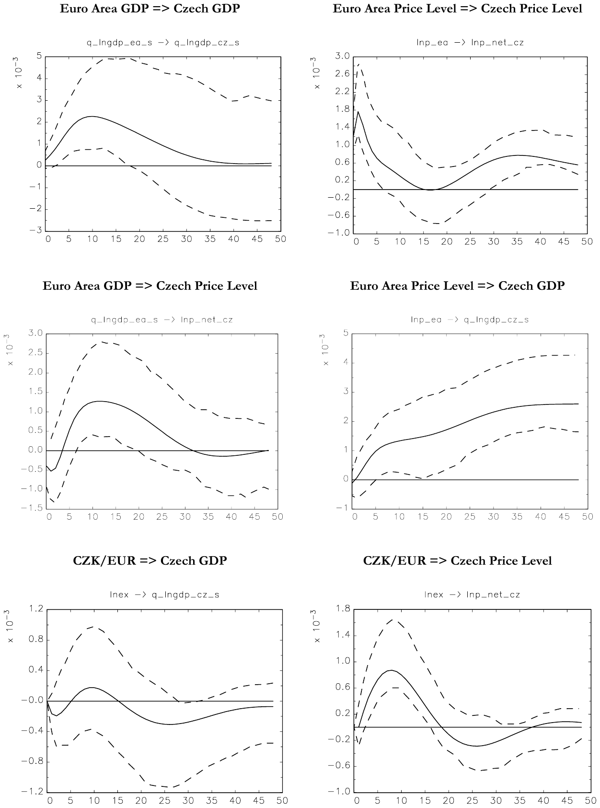
Figure 2 gives the impulse responses of Czech and euro area monetary policy for Czech GDP, prices, and the exchange rate vis-à-vis the euro. The results document a well-functioning monetary transmission mechanism in the Czech Republic. A monetary tightening is associated with a lower degree of economic activity, bottoming out after about one year. We find that prices fall after a monetary tightening and bottom out after 15 months or so. This is in line with the targeting horizon of the CNB, which is considered to be between 12 and 18 months. Our results point to a delayed overshooting in exchange rate behavior, i.e., a rather persistent appreciation of the domestic currency after a monetary tightening (bottoming out after about 6 months). All in all, the results confirm the previous evidence on the effects of Czech monetary policy (Borys et al., 2009).
The response of Czech economic activity to a euro area monetary policy shock is positive, but surrounded by a large degree of uncertainty. The positive impact of a foreign monetary tightening on Czech GDP is likely to be driven by depreciation of the Czech currency, which could in turn boost net exports or, more generally, aggregate demand and thus increase output (Parrado, 2001, and Horváth and Rusnák, 2009, report similar findings for Chile and Slovakia, respectively). The response of the Czech price level to a European Central Bank monetary tightening is found to fluctuate over time and is again surrounded by a large margin of uncertainty.
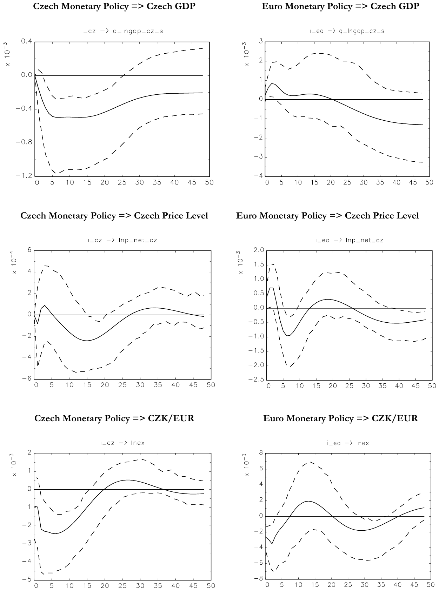
Figure 3 shows that an increase in credit boosts GDP as well as the price level, both with a peak after 7 months. A monetary tightening is found to lead to a credit contraction, with the strongest effect after about one year.
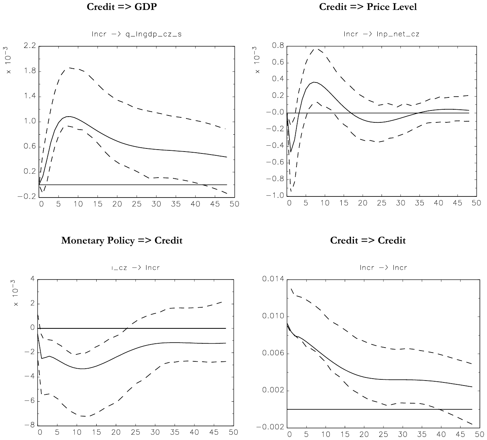
Bank Liquidity
The effect of bank liquidity on domestic GDP is not statistically significant, as reported in Figure 4, and the effect on the price level is mixed: it is counter-intuitively negative in the first half-year and positive between the first and the second year. On the other hand, the response of bank liquidity to a monetary policy tightening is as expected. A monetary restriction leads to a fall in the share of liquid assets held by domestic banks as the opportunity cost of holding money and other liquid assets rises (Lucchetta, 2007).
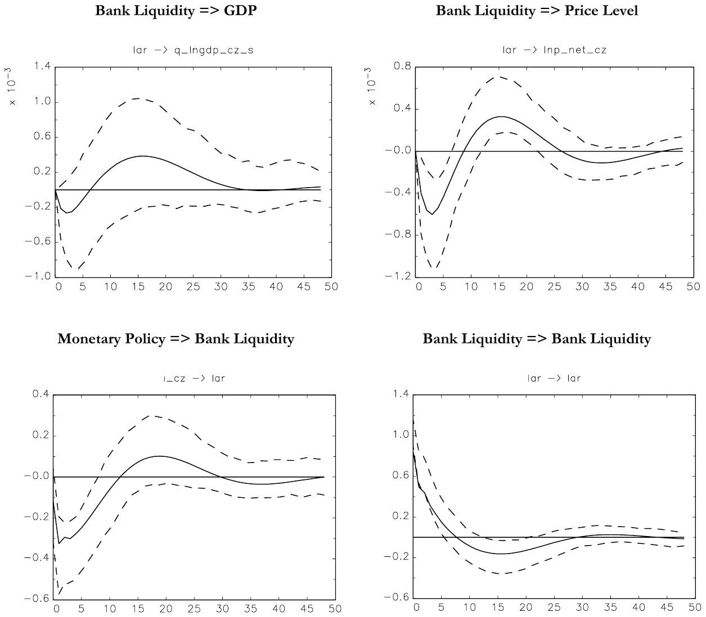
Loan Loss Provisions
The provisions that banks set aside to hedge against future loan losses do not significantly affect real economic activity, and their effect on prices also seems to be statistically insignificant (see Figure 5). We find that tighter monetary policy is associated with more cautious behavior of commercial banks, as the banks increase their provisions for loan losses. Therefore, the results broadly support the evidence for the risk-taking channel of monetary policy, where low monetary policy rates may induce banks to take on extra risk (Jimenez et al., 2009).
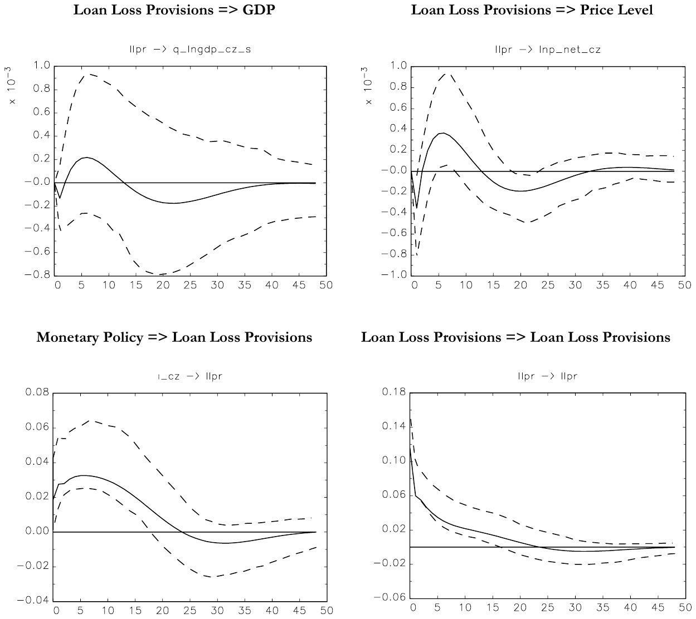
Non-Performing Loans
The share of non-performing loans is a backward-looking indicator, in contrast to loan loss provisions, which in principle have a rather strong forward-looking element. The results in Figure 6 indicate that the effects of non-performing loans on the macroeconomy are surrounded by uncertainty. There is a marginally significant positive response of GDP in 6–12 months, which may be related to macroeconomic cyclicality: when the losses are realized, output recovers in about a year. Monetary policy seems to marginally influence the extent of non-performing loans: a monetary tightening decreases the proportion of non-performing loans with a peak in about 1 year.
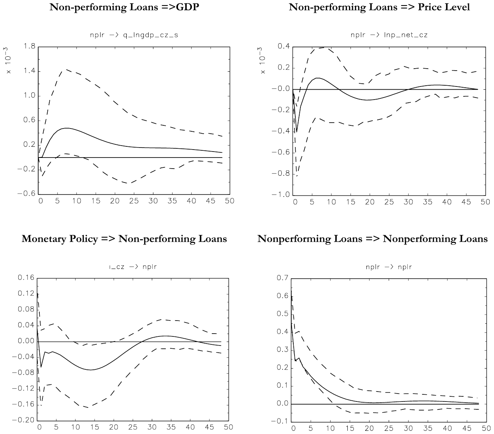
Prague Stock Exchange PX Index
The results depicted in Figure 7 indicate that the Prague Stock Exchange Index (PX) is an important indicator for Czech GDP. An increase in the PX index is followed by a significant increase in GDP. This is probably not because the Prague Stock Market, given its rather limited size, has a strong causal effect on the economy, but rather because the stock prices aggregated by the PX index seem to acceptably foresee future economic developments. The effect of the stock market on prices is insignificant, which is to a certain extent expected, as the stock market reflects the expected present discounted value of future earnings, which do not have to be robustly correlated with inflation dynamics, especially in a low inflation environment. The impact of monetary policy on the stock market is found to be statistically insignificant. This is probably a consequence of the fact the Czech stock market comprises only large international companies, which are less affected by domestic monetary policy.
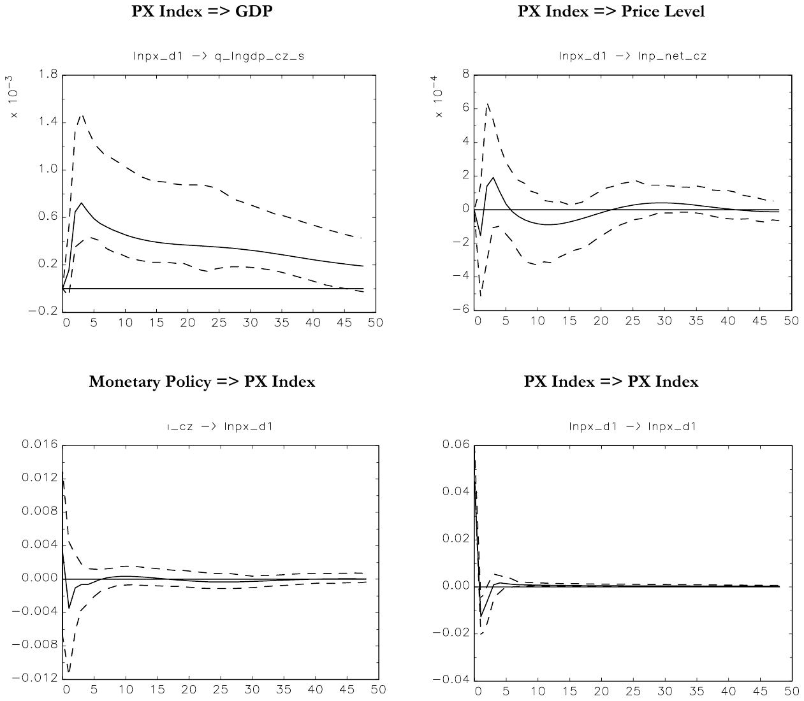
Financial Stance Indicator
The financial stance indicator is calculated as the first principal component linear combination of all the financial variables used above, capturing 70% of the sample variation. Prior to the calculation of the principal component, the variables are transformed in such a way that the increase in the resulting indicator represents an improvement in the overall financial stance.2 The first principal component is significantly correlated with the simple average of the transformed variables (the correlation coefficient is 0.99).
According to our results, an improved financial stance fuels economic growth, but its effect on prices is found to be statistically insignificant. A monetary restriction leads to a significant fall in the financial stance throughout the first year, with a bottom effect after 6 months. This suggests that although the typical transmission lag of monetary policy to the real economy is about 1– 2 years, the effect on many financial variables is rather faster and peaks in about half a year.
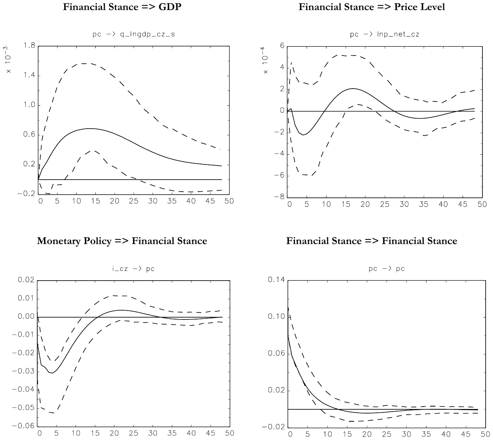
4.2. Comparison of Forecasting Performance
This subsection gives the results on the forecasting performance of two generic models – the first one with macroeconomic variables only (referred to as the macroeconomic model) and the second one with macroeconomic as well as financial variables (referred to for convenience as the macro-finance model). We focus on out-of-sample forecast evaluation, as Stock and Watson (2003) show that in-sample Granger causality tests provide a poor guide to forecast performance.
One-to-twelve months ahead out-of-sample forecasts are compared to the actual data and the corresponding squared errors of the forecasts are obtained for each foresting horizon. The squared errors are then averaged over the forecasting horizon to obtain mean squared errors. The predictive accuracy of the macro-finance model is then compared to the performance of the macroeconomic model using a relative mean squared error statistic. This exercise is carried out on three data samples. First, the VAR models up to 2006:7 are estimated and out-of-sample forecast comparisons are conducted on the 2006:8–2007:8 data. Second, the VAR models up to 2007:7 are estimated and the forecasts for 2007:8–2008:8 are compared to the actual data. Third, the VAR models up to 2008:7 are estimated and the forecasts for the 2008:8–2009:8 data are compared to the actual data. This is a similar methodology to the Stock and Watson (2003, 2008) recursive estimation, while our exercise contains three recursive steps. Above the Stock and Watson methodology, we test the forecasting performance at multiple horizons: from 1 to 12 months.
Therefore, we have three out-of-sample periods over which we compare the one to twelve months ahead forecasting performance of the simple macroeconomic model to the macro-finance model. Moreover, these periods cover the turbulent period immediately before and during the 2008–2009 financial crisis, when signals from the financial sector were of utmost interest.
The performance of the various models in forecasting GDP and CPI inflation is examined. The baseline results are presented in Figures 8–9 (the forecasting performance is averaged over three samples – 2006:8–2007:8, 2007:8–2008:8, and 2008:8–2009:8, as explained above). The stock market index is found to improve the GDP forecast for the entire forecasting horizon. The same goes for the share of non-performing loans and bank liquidity two quarters ahead. The size of the contribution of the stock market index for GDP forecasting is substantial and ranges from 25 to 50%. As regards prices, loan loss provisions, credit, and the stock market index are found to contribute to better predictability of prices for the entire forecasting horizon, although the contribution of the stock market index is rather marginal. The size of the contribution of the two former variables is about 10% on average. The results of the forecasting performance of the macro-finance models differ a lot between the forecasts of GDP and inflation. Credit and loan loss provisions improve the forecast of prices, but not the forecast of GDP.
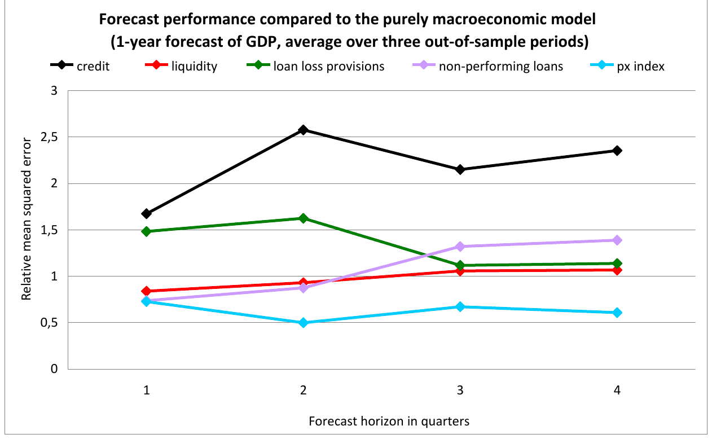
![A line chart of the relative mean squared error of the price-level forecast against a forecast horizon of one to twelve months, one line per financial variable. The first month is the outlier: loan loss provisions start at 0.3 and liquidity at 1.68. From the second month on the lines cluster between about 0.8 and 1.1. Credit stays just below one throughout and loan loss provisions fall away to about 0.8 by the twelfth month, while non-performing loans sit just above one; liquidity and the px index run close to the line and cross it more than once.](figures/fig11.png)
It has to be emphasized that these results are to a large extent driven by the fact that we are trying to forecast out of sample over the rather turbulent years 2007–2009. When we restrict our forecasts to 2006:8–2007:8, i.e., the period before the financial crisis, liquidity, non-performing loans, and the PX index consistently improve the forecasts for both GDP and inflation. In the 2007:8–2008:8 period, non-performing loans, liquidity, and the PX still help to improve the forecasts of GDP, but the results become mixed for inflation. This may be due to the external food and oil-price shocks hitting the economy in late 2007. See the Appendix for forecast performance comparisons in the three one-year periods separately.
Importantly, the Prague Stock Exchange PX index helps predict both inflation and GDP in all the observed periods, including during the crisis. Although the volumes traded on the Prague Stock Exchange are relatively low, the PX index seems to be a consistently good predictor of future economic developments.
Apart from the consistently positive effect of the PX index, our results broadly confirm those of Stock and Watson (2003), who find that some financial variables help predict the development of the macroeconomy in some periods, but that their historical performance is largely unrelated to their current performance.
5. Concluding Remarks
In this paper, we estimated block-restriction VAR models for the Czech and euro area economies in which euro area macroeconomic variables can influence Czech variables, but not vice versa, and used this type of model to examine the predictive content of various financial variables for GDP and prices. As compared to the previous literature summarized in Stock and Watson (2003), we use a different set of financial variables, such as bank liquidity, the non-performing loan ratio, and loan loss provisions, along with more standard ones such as credit and the stock market index. An additional feature of our paper is an examination of the forecasting performance of these financial variables during the 2008–2009 financial crisis, when signals from the financial sector were of utmost importance for understanding macroeconomic developments.
Our results indicate that financial variables have a systematic effect on the macroeconomy and often improve the forecast of GDP and prices, but the predictive performance of the individual financial variables varies over time, in particular during the 2008–2009 financial crisis, and good performance in one period does not necessarily guarantee good performance in the following period. In other words, the results broadly confirm the findings of Stock and Watson (2003), in the sense that some financial variables predict either inflation or output growth in some periods, but do not predict them in different periods, while in these different periods some other financial variables predict either inflation or output growth. The exception to this empirical regularity is the stock market index, which seems to consistently improve the forecast of both GDP and prices.
In addition, our results document a well-functioning monetary transmission mechanism with a hump-shaped response of GDP to a monetary policy shock bottoming out after one year or so, and a hump-shaped response of inflation to a monetary policy shock with a bottom after 18 months. Moreover, euro area shocks are important for the Czech economy. For example, the response of Czech GDP to a euro area GDP shock is hump-shaped and significantly positive in the 5–15 months after the shock.
Impulse response analysis also uncovers considerable interactions between the macroeconomy and the financial sector. An increase in the volume of credit is found to boost GDP as well as prices, both with a peak after 7 months. A monetary tightening contributes to a credit contraction, with the strongest effect after about one year. A monetary restriction also leads to a fall in the share of liquid assets held by domestic banks, as the opportunity cost of holding money, as well as other liquid assets, rises (Lucchetta, 2007). Similarly, our results indicate that tighter monetary policy is associated with more cautious behavior of commercial banks, as the banks increase their provisions for loan losses. Therefore, the results broadly support the evidence for the risk-taking channel of monetary policy, where low monetary policy rates may induce banks to take on extra risk (Jimenez et al., 2009).
As for future research, we believe that researchers could focus on nowcasting exercises explicitly dealing with the issue of ragged edges in the data.
REFERENCES
- Assenmacher, K. and S. Gerlach (2008a): “Monetary Policy, Asset Prices and Macroeconomic Conditions: A Panel-VAR Study.” Research Series 200810-24, National Bank of Belgium.
- Assenmacher, K. and S. Gerlach (2008b): “Financial Structure and the Impact of Monetary Policy on Asset Prices.” Working Papers 2008-16, Swiss National Bank.
- Babecka-Kucharcukova, O. (2009): “Transmission of Exchange Rate Shocks into Domestic Inflation: The Case of the Czech Republic.” Czech Journal of Economics and Finance 59(2), pp. 137–152.
- Baboucek, I. and M. Jancar (2005): “Effects of Macroeconomic Shocks to the Quality of the Aggregate Loan Portfolio.” Czech National Bank Working Paper No. 2/2005.
- Bárta, V. and M. Singer (2006): “The Banking Sector after 15 years of Restructuring: Czech Experience and Lessons.” BIS Papers No. 28.
- Borys Morgese, M., M. Franta, and R. Horváth (2009): “The Effects of Monetary Policy in the Czech Republic: An Empirical Study.” Empirica 36(4), pp. 419–443.
- CNB (2009): Financial Stability Report, Czech National Bank.
- Cushman, D. O. and T. Zha (1997): “Identifying Monetary Policy in a Small Open Economy under Flexible Exchange Rates.” Journal of Monetary Economics 39, pp. 433–448.
- Čihák, M., J. Heřmánek, and M. Hlaváček (2007): “New Approaches to Stress Testing the Czech Banking Sector.” Czech Journal of Economics and Finance 57(1–2), pp. 41–59.
- Elbourne, A. and J. de Haan (2006): “Financial Structure and Monetary Policy Transmission in Transition Countries.” Journal of Comparative Economics 34(1), pp. 1–23.
- Estrella, A., A. P. Rodrigues, and S. Schich (2003): “How Stable is the Predictive Power of the Yield Curve? Evidence from Germany and the United States.” Review of Economics and Statistics 85(3), pp. 629–644.
- Forni, M., M. Hallin, M. Lippi, and L. Reichlin (2003): “Do Financial Variables Help Forecasting Inflation and Real Activity in the Euro Area?” Journal of Monetary Economics 50(6), pp. 1243–1255.
- Goodhart, C. and B. Hofmann (2000): “Do Asset Prices Help to Predict Consumer Price Inflation?” Manchester School 68(0), pp. 122–140.
- Goodhart, C. and B. Hofmann (2008): “House Prices, Money, Credit, and the Macroeconomy.” Oxford Review of Economic Policy 24(1), pp. 180–205.
- Goodhart, C., Osorio, C., and D. Tsomocos (2009): An Analysis of Monetary Policy and Financial Stability: A New Paradigm, CESifo Working Paper No. 2885.
- Hall, P. (1988): “On Symmetric Bootstrap Confidence Intervals.” Journal of the Royal Statistical Society B50, pp. 35–45.
- Holub, T. (2008): “Causes of Deviations from the CNB’s Inflation Targets: An Empirical Analysis.” Czech Journal of Economics and Finance 58(9–10), pp. 425–433.
- Horváth, R. and M. Rusnák (2009): “How Important Are Foreign Shocks in a Small Open Economy? The Case of Slovakia.” Global Economy Journal, Berkeley Electronic Press 9(1), Article 5.
- Jacobson, T., J. Linde, and K. Roszbach (2005): “Exploring Interactions Between Real Activity and the Financial Stance.” Journal of Financial Stability 1, pp. 308–341.
- Jiménez, G., S. Ongena, J. L. Peydró, and J. Saurina (2009): “Hazardous Times for Monetary Policy: What Do Twenty-Three Million Bank Loans Say About the Effects of Monetary Policy on Credit Risk?” Banco de Espana Working Papers 0833, Banco de España.
- Lucchetta, M. (2007): “What Do Data Say about Monetary Policy, Bank Liquidity and Bank Risk Taking?” Economic Notes 36(2), pp.189–203.
- Lütkepohl, H. (2006): New Introduction to Multiple Time Series Analysis. Springer-Verlag, 1st ed.
- Maćkowiak, B. (2006): “How Much of the Macroeconomic Variation in Eastern Europe is Attributable to External Shocks?” Comparative Economic Studies 48(3), pp. 523–544.
- Mojon, B. and G. Peersman (2001): “A VAR Description of the Effects of Monetary Policy in Individual Countries of the Euro Area.” ECB Working Paper No. 92.
- Parrado, E. (2001): “The Effects of Foreign and Domestic Monetary Policy in a Small Open Economy: The Case of Chile.” Central Bank of Chile Working Paper No. 108.
- Stock, J. H. and M. W. Watson (1998): “Variable Trends in Economic Time Series.” The Journal of Economic Perspectives 2(3), pp. 147–174.
- Stock, J. H. and M. W. Watson (2003): “Forecasting Output and Inflation: The Role of Asset Prices.” Journal of Economic Literature 41(3), pp. 788–829.
- Stock, J. H. and M. W. Watson (2008): “Phillips Curve Inflation Forecasts.” NBER Working Papers 14322, National Bureau of Economic Research, Inc.
- Zha, T. (1999): “Block Recursion and Structural Vector Autoregressions.” Journal of Econometrics 90, pp. 291–316.
Appendix: Comparison of Forecasting Performance in Three One-Year Periods Separately
GDP
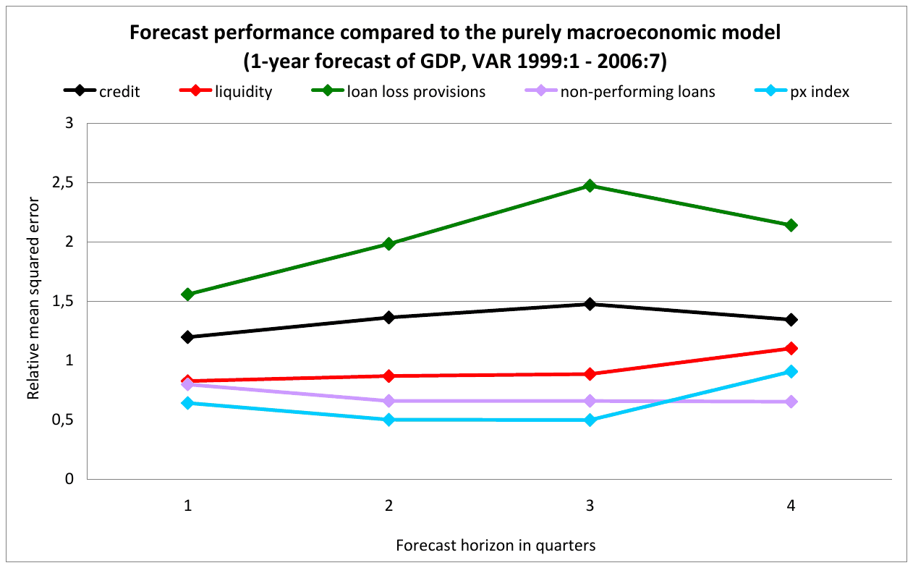
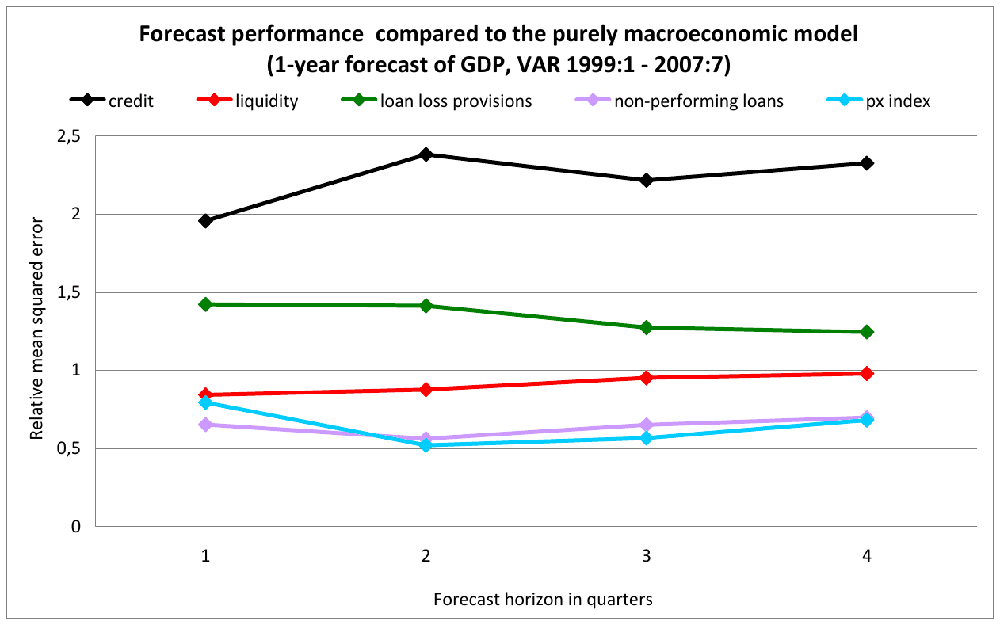
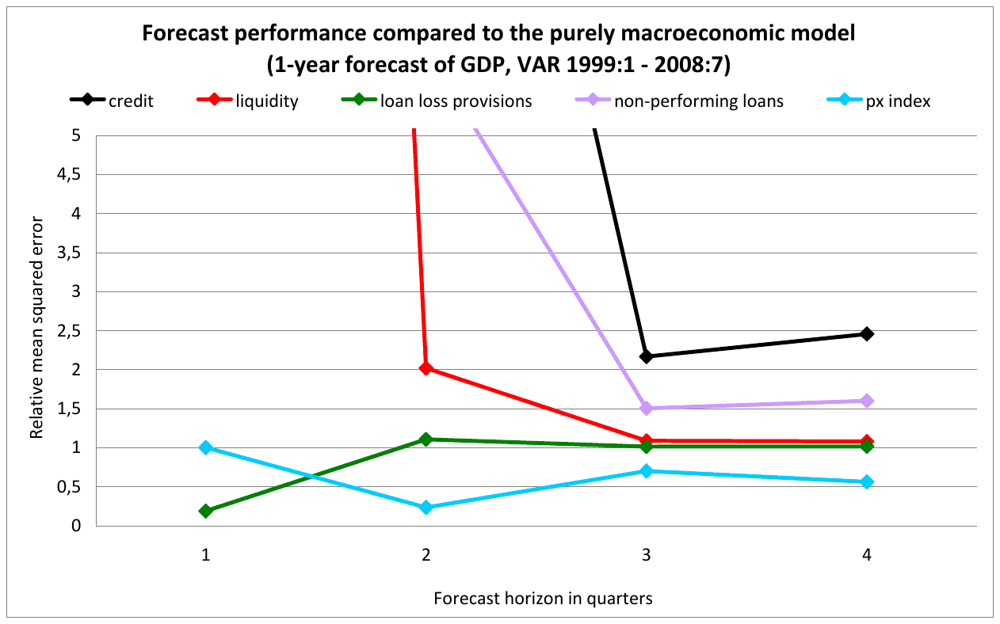
Prices
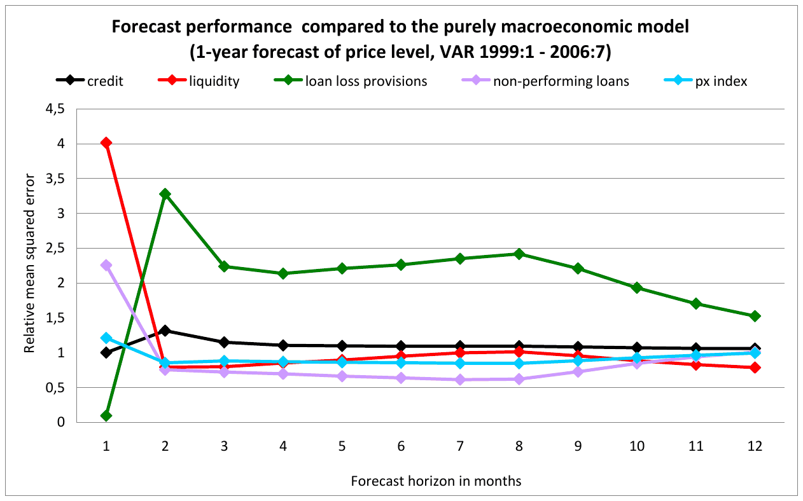
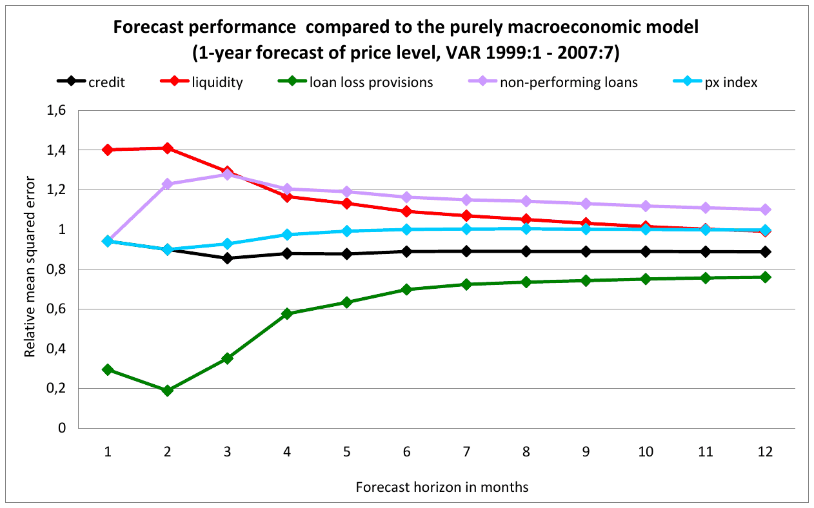
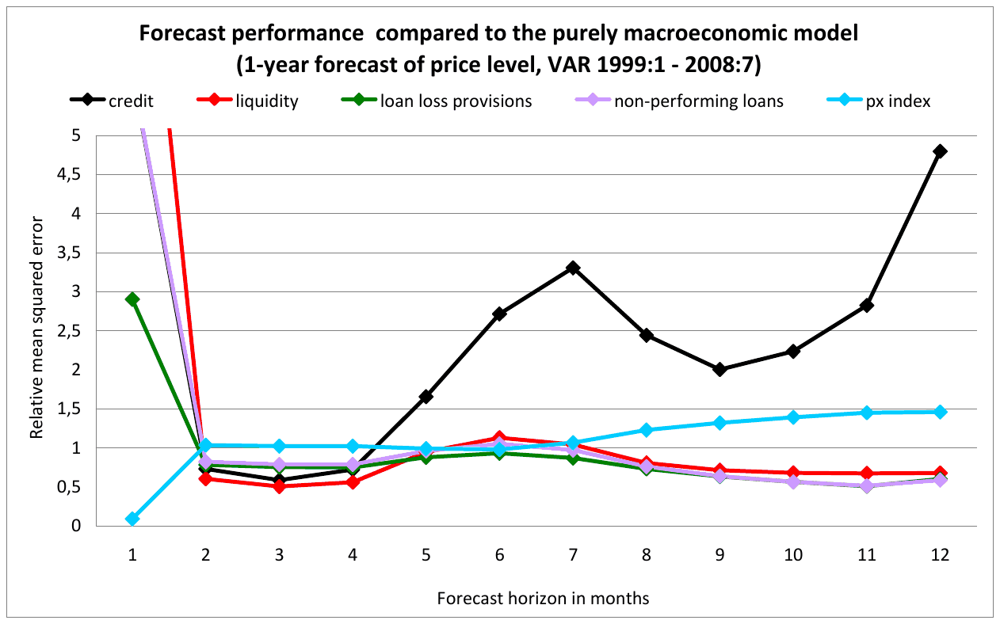
ENDNOTES
- For this purpose, the variables were standardized and the loan loss provisions and non-performing loans series were multiplied by -1.
- This means that non-performing loans and loan loss provisions are multiplied by -1.